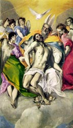

El Greco, The Holy Trinity.1
I have interpreted the Catholic mass over one hundred times, but I still struggle trying to keep up with the congregation when they recite the Credo (I believe in one God. . .). This is because it is one of the most profound parts of the mass and yet it is often recited at a breakneck (break wrist?) speed. This is fine for the congregants who may have said it all their lives, but pity the poor interpreter who is trying to keep up. For this reason I always bring a copy of this glossing of my translation of the Credo to assigned masses so that I will not be left far behind. Hopefully some of you will find this helpful. Take from it what helps and reword what you think should be so. You can click on the link below for an exsplanation of what my glossing means. The most important things are that a gloss in italics means the sign is executed with the non-dominant hand and that "(<) . . . , (>)" means that the first part of the phrase is spatialized on the non-dominant side of the body and the second part on the dominant side.
WE BELIEVE ONLY-ONE GOD. HEAVENLY-FATHER, HAVE ALL POWER HEAVEN, EARTH. HE CONTROL (<) THINGS WE SEE, (>) THINGS WE CAN'T.
WE BELIEVE ONLY-ONE LORD JESUS CHRIST. ONLY SON FROM GOD, FOREVER GO-TOGETHER HEAVENLY-FATHER. GOD, GOD EQUAL. alt.THEIR LIGHT lf-SAME-AS-rt. TRUE GOD, TRUE GOD. rt-CAUSE-lf NOT MAKE. SON lf-RELATED-TO-rt HEAVENLY-FATHER. HE-Jesus@lf MAKE EVERYTHING+. FOR OUR SALVATION, HE-Jesus COME-FROM-Heaven HEAVEN.
(bow head) THROUGH HOLY SPIRIT HIS POWER, VIRGIN M-A-R-Y GIVE-BIRTH. JESUS BECOME MAN. (head up)
FOR OUR S-A-K-E PONTIUS-PILATE CRUCIFY HIM-Jesus. SUFFER, DIE, BURIED. THIRD DAY HE-Jesus RISE LIKE PROPHET++ PROMISE. HE-Jesus ASCEND HEAVEN. V:-CL'sit on left', (1h)HEAVENLY-FATHER V:-CL'sit on right'. HE-Jesus COME AGAIN WITH GLORY WILL. FOR-FOR? JUDGE PEOPLE (<) LIVE, (>) DEAD. HIS-Jesus' KINGDOM END NEVER.
WE BELIEVE HOLY SPIRIT GIFT-TO-us LIFE. WITH (<) SON, (>) HEAVENLY-FATHER, THREE-OF-THEM~TRINITY. WE WORSHIP (2h)THEM, ACCEPT THEIR GLORY. ALL-ALONG HOLY SPIRIT SPEAK THROUGH PROPHET++.
WE BELIEVE ONLY-ONE CHURCH, HOLY, HOMOGENOUS. AUTHORITY, CHRIST HAND-DOWN-GENERATION-TO-GENERATION. WE RECOGNIZE ONLY-ONE BAPTISM FORGIVE SIN. WE LOOK-FORWARD DEAD RESURRECT, AND LIVE NEW WORLD FUTURE. AMEN.